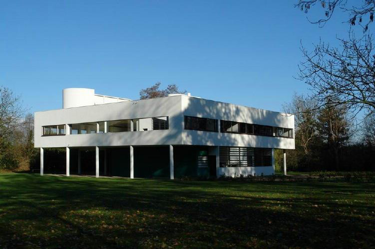
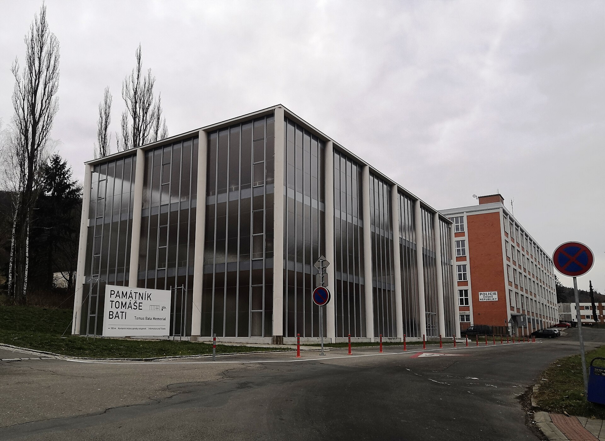
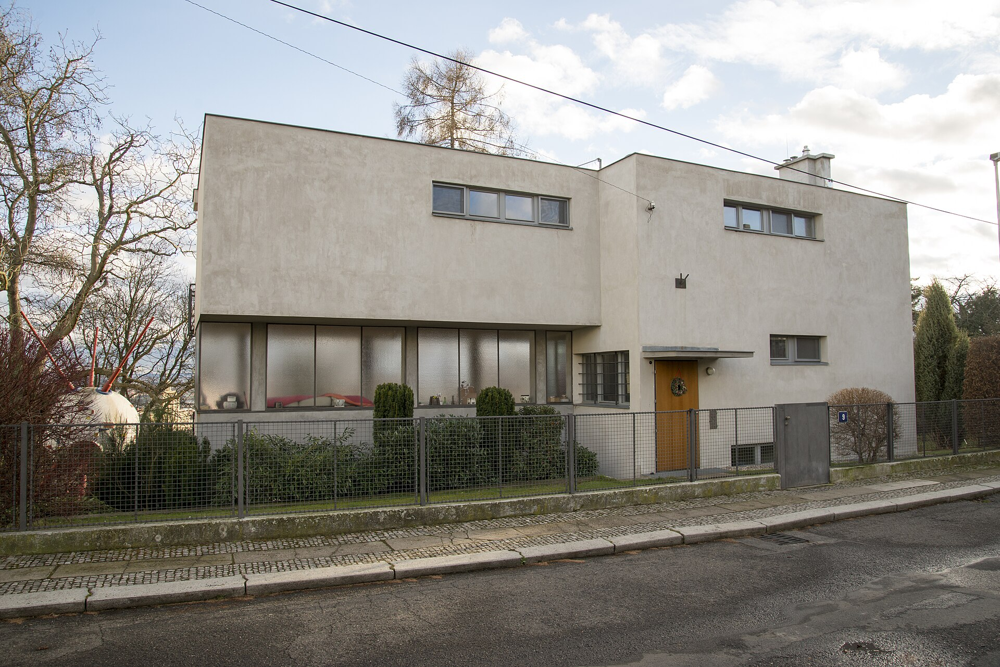
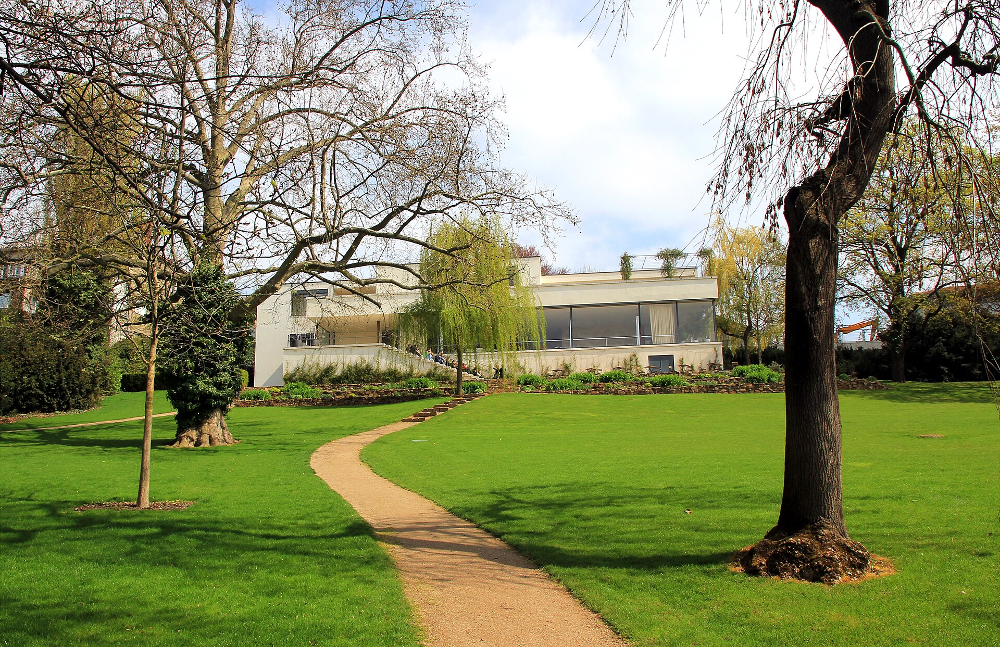

Komise Werkbundu
Na Babě se otevírá výstava moderního bydlení. Vy jste odborná komise: než pustíte návštěvníky dovnitř, ukažte, že funkcionalismu opravdu rozumíte.
Čtyři kola otázek ve skupinách. Odpovědi si zapisujete, správné řešení uvidíte až na konci při vyhodnocení.

Zařaďte stavbu.
- Název a místo
- Architekt
- Rok ± 2
- Které z pěti bodů Le Corbusiera na fotce vidíte? A který z nich z fotky poznat nejde?
Villa Savoye, Poissy u Paříže
Le Corbusier, 1928–31
Na fotce: piloty · pásová okna · volné průčelí · střešní zahrada. Poznat nejde: volný půdorys (je vidět jen zevnitř).
- Víkendový dům pro manžele Savoyeovy u Paříže. Le Corbusier ho navrhl s bratrancem Pierrem Jeanneretem.
- Učebnicová ukázka pěti bodů. Le Corbusier je zformuloval v letech 1926–27 a zveřejnil v souvislosti s výstavou Weissenhof (1927).
- Dům pro auto. Zaoblené přízemí kopíruje poloměr otáčení automobilu, kterým se přijíždělo až pod dům. Je to strojová estetika: „dům je stroj na bydlení“ (Vers une architecture, 1923).
- Promenade architecturale. Středem domu stoupá rampa a prostor se odhaluje postupně při chůzi, od vstupu až po střešní solárium.
- Osud: brzy se objevily problémy se zatékáním, za války byl dům poškozen. Dnes je to muzeum a od roku 2016 součást světového dědictví UNESCO (soubor Le Corbusierových staveb).

Zařaďte stavbu.
- Název a město
- Architekt
- Rok ± 2
- K čemu stavba sloužila?
Památník Tomáše Bati, Zlín
F. L. Gahura, 1933
Pomník Tomáši Baťovi, který zahynul v roce 1932 při letecké havárii. Uvnitř viselo letadlo Junkers F 13.
- Havárie: Tomáš Baťa zahynul v červenci 1932 krátce po startu letounu Junkers F 13 z letiště v Otrokovicích. Památník byl otevřen v roce 1933, rok po jeho smrti.
- František Lýdie Gahura byl hlavní architekt baťovského Zlína: územní plán, radnice, obchodní dům, Velké kino.
- Konstrukce: železobetonový skelet ve zlínském modulu 6,15 × 6,15 m, stejném jako u továrních budov, a celoskleněný plášť. Památník tedy používá „tovární“ jazyk pro pietní účel.
- Osud: v 50. letech byl přestavěn na Dům umění (sídlo filharmonie) a původní podoba zmizela. V letech 2018–2019 ho obnovil Petr Všetečka (Transat architekti). Vrátila se i replika letadla, kterou za zhruba 6 mil. Kč vyrobila olomoucká firma.
- Proč je to záludné: stavba je funkcionalistická tvarem i konstrukcí, ale její „funkce“ je symbolická. Na to navazuje závěrečný rozstřel.

Pohled z ulice. Kdo a kde?
- Osada / kolonie a město
- Architekt
- Čím je autor v rámci osady výjimečný?
- Co je vidět ze zahrady, ale ne z ulice?
Vila Paličkových, osada Baba, Praha
Mart Stam, 1932
Jediný zahraniční architekt na Babě (Nizozemec). Ze zahrady: dům vyzdvižený na pilotech.
- Mart Stam (1899–1986), nizozemský architekt. Stavěl i ve Stuttgartu na Weissenhofu (1927) a je považován za autora první konzolové židle bez zadních nohou (1926).
- Vilu postavil pro Jiřího Paličku a textilní výtvarnici Emílii Paličkovou.
- Osada Baba byla výstava Svazu československého díla (českého Werkbundu) z roku 1932. Plán navrhl Pavel Janák: 33 domů ve čtyřech ulicích podél vrstevnic, rozmístěných šachovnicově kvůli výhledu a soukromí, s obytnými místnostmi na jih.
- Rozdíl oproti Stuttgartu a Brnu: každý dům byl navržen pro konkrétního soukromého stavebníka, ne jako vzorový typ.
- Dnes: domy jsou stále obydlené. Od roku 1993 je osada městská památková zóna a v roce 2020 získala Značku evropského dědictví (podle prezentace třídy).
Z katalogu výstavy: 4 tvrzení jsou špatně.
Pište číslo + opravu. Za označení pravdivého tvrzení −1.
- Deutscher Werkbund vznikl roku 1907 v Mnichově.
- Walter Gropius založil Bauhaus roku 1919 ve Výmaru.
- Roku 1925 se Bauhaus přestěhoval do Berlína. → do Dessau
- Po Gropiovi vedl Bauhaus Hannes Meyer, po něm Mies van der Rohe.
- Roku 1927 uspořádal Werkbund výstavu Weissenhof ve Stuttgartu.
- Urbanistický plán brněnské kolonie Nový dům (1928) navrhl Pavel Janák. → Bohuslav Fuchs
- Urbanistický plán osady Baba navrhl Pavel Janák.
- Obytné místnosti domů na Babě jsou orientované na jih.
- Jediným zahraničním architektem na Babě byl Le Corbusier. → Mart Stam
- K pěti bodům Le Corbusiera patří nosné obvodové zdi. → volné průčelí
- Kongres CIAM byl založen roku 1928.
- Výstavu „The International Style“ (New York, 1932) spoluorganizoval Philip Johnson.
- 3 · Dessau: v roce 1924 ztratil Bauhaus po volbách v Durynsku podporu a musel z Výmaru odejít. V Dessau dostal novou budovu od Gropia (1925–26). V roce 1932 ho zavřela městská rada ovládaná nacisty, škola se přesunula do Berlína jako soukromá a v roce 1933 se sama rozpustila.
- 4 · pořadí ředitelů (pravda): Hannes Meyer (1928–30) byl odvolán z politických důvodů, kvůli obvinění z komunistických aktivit. Po něm přišel Mies van der Rohe (1930–33).
- 6 · Nový dům: plán navrhl Bohuslav Fuchs, projekt vedl spolu s Jaroslavem Gruntem. Šestnáct vzorových domů od devíti architektů podle příkladu Weissenhofu. Kolonie byla součástí Výstavy soudobé kultury 1928.
- 7 · Janák a Baba (pravda): je to past pro ty, kdo si spletli Brno a Prahu.
- 9 · Mart Stam: Le Corbusier na Babě nestavěl. Ve Stuttgartu (1927) ale stavěli oba.
- 10 · volné průčelí: nosnou funkci přebírá skelet, fasáda se proto může libovolně otevírat okny. Nosné obvodové zdi jsou přesný opak.
Vila Tugendhat vs. 5 bodů Le Corbusiera

Pointa: pět bodů je manifest Le Corbusiera, ne definice funkcionalismu. Mies (1929–30) šel jinou cestou.
| 1 | Piloty NE Stojí ve svahu: z ulice je přízemní, do zahrady má víc podlaží. |
| 2 | Střešní zahrada ČÁSTEČNĚ Velká terasa v horním podlaží, ale žádná zahrada. |
| 3 | Volný půdorys ANO Ocelový skelet, chromované sloupy. Prostor dělí jen onyxová a ebenová stěna. |
| 4 | Pásová okna NE / jinak Místo pásu oken je celá stěna skleněná, tabule se spouštěly do podlahy. |
| 5 | Volné průčelí ANO Fasáda nic nenese, nosný je skelet. |
- Stavebníci: Fritz a Greta Tugendhatovi. Ludwig Mies van der Rohe ji navrhl v letech 1929–30, interiér a nábytek navrhl spolu s Lilly Reichovou (např. křeslo „Tugendhat“ a „Brno“).
- Plynoucí prostor místo pokojů: obytné patro je jeden velký prostor. Dělí ho volně stojící onyxová stěna (onyx z pohoří Atlas, při západu slunce prosvítá a mění barvu) a půlkruhová stěna z makasarského ebenu.
- Technika: dvě velké skleněné tabule se elektricky spouštěly do podlahy a obytný prostor se tak otevřel do zahrady.
- Mies vs. Le Corbusier: Le Corbusier chtěl standard a „stroj na bydlení“, Mies luxusní materiály a dokonalý detail („less is more“). Oba jsou funkcionalisté, ale každý jinak.
- Osud: rodina v roce 1938 emigrovala, za války vilu zabralo gestapo. V roce 1992 se tu jednalo o rozdělení Československa. Od roku 2001 je památkou UNESCO, v letech 2010–12 prošla rekonstrukcí.
Funkcionalismus 20. let vs. mezinárodní sloh 30. let
- Dva podstatné rozdíly (ne „ve 30. letech se víc stavělo“)
- Proč se tomu říká „sloh“? Co se s hnutím stalo?
- Která stavba z dnešní hodiny patří spíš do 30. let a proč?
20. léta: avantgardní program, sociální utopie. Forma z funkce, proto asymetrický půdorys, každá zóna má vlastní hmotu.
30. léta: šíří se po světě (časopisy, výstavy, CIAM, emigrace). Pravidla se uvolňují, stavba přestává vyjadřovat funkci.
„Sloh“: výstava MoMA, New York 1932 (Hitchcock, Johnson). Z programu se stává soubor vizuálních znaků.
Příklad: Památník T. Bati (1933), symetrický skleněný kvádr pro reprezentaci.
- Výstava a kniha: Henry-Russell Hitchcock a Philip Johnson uspořádali v roce 1932 v MoMA výstavu Modern Architecture: International Exhibition a vydali knihu The International Style: Architecture Since 1922.
- Jejich tři principy: architektura jako objem (ne hmota a masa), pravidelnost místo osové symetrie, žádný přidaný ornament. Jsou to čistě formální kritéria.
- Co se ztratilo: evropská avantgarda 20. let chtěla řešit bydlení pro masy, hygienu a sociální otázku. Americké pojetí z toho udělalo hlavně vzhled. Proto „sloh“.
- Šíření: po roce 1933 emigrují Gropius (Harvard), Mies (Chicago) a Breuer. Po válce se ze slohu stává jazyk kancelářských věží po celém světě.
- Kritika: od 60. let ho napadá postmoderna. Robert Venturi na Miesovo „less is more“ odpověděl „less is a bore“.
- U nás: ve 30. letech se funkcionalismus stává běžným stylem činžáků, vil a obchodních domů. Baťův Zlín ukazuje jeho standardizovanou, průmyslovou podobu.
Kdo sem nepatří? Zdůvodněte.
D: Gahura nestavěl na Babě, je to architekt Baťova Zlína.
Lze uznat i: A Janák (jako jediný navrhl plán celé osady) · C Žák (mladší generace, Janák a Gočár začínali jako kubisté).
Co sem nepatří? Zdůvodněte.
C: Dessau je stěhování Bauhausu, ne výstavní kolonie.
Ostatní: Weissenhof, Nový dům, Baba. Lze uznat i: B Brno (jen domácí architekti).
- Celkem šest kolonií: Stuttgart 1927 (Weissenhof), Brno 1928 (Nový dům), Vratislav 1929, Curych 1930–32 (Neubühl), Vídeň 1932 a Praha 1932 (Baba).
- Cílem bylo ukázat veřejnosti nové bydlení v praxi: vzorové domy, nové materiály, standardizace, světlo a hygiena.
- Stuttgart měl mezinárodní sestavu (Le Corbusier, Mies, Gropius, Stam…). V Brně stavěli jen českoslovenští architekti. Na Babě stavěli Češi a jediný cizinec, Mart Stam.
Co sem nepatří? Zdůvodněte.
D: Budova 21 (Baťův mrakodrap, Karfík 1938) stojí ve Zlíně, ostatní v Brně.
Lze uznat i: B Vila Stiassni (Wiesner 1929), jediná postavená k soukromému bydlení.
Vyhodnocení
Projdeme všechny otázky znovu, tentokrát se správnými odpověďmi. Opravujete papír sousední skupiny a body hlásíte nahlas.
„Památník Tomáše Bati neměl praktickou funkci. Takže to není funkcionalismus.“
Pro: funkcionalismus = bydlení, práce, provoz. Památník je kult zakladatele, tedy ideologie.
Proti: funkce může být symbolická. Skelet, modul 6,15 m a sklo jako u továren: konstrukce je přiznaná.
Výsledky
Exit ticket: „Nejvíc mě překvapilo, že …“
Zdroje a licence
Obsah: prezentace třídy (Funkcionalismus; Funkcionalismus v Brně a Zlíně; Funkcionalistická osada Baba), doplněno a ověřeno z:
Archiweb – kolonie Nový dům · BAM Brno
pamatnikbata.eu – o památníku · ZAM Zlín · ČT24 – replika letadla
tugendhat.eu – stručný průvodce vilou
Villa Savoye (Wikipedia) · Fondation Le Corbusier
Hannes Meyer (Wikipedia) · estav.cz – Baťův mrakodrap
Fotografie:
Villa Savoye: převzato z prezentace třídy, autor fotografie neuveden
Památník Tomáše Bati: Palickap, CC BY-SA 4.0, originál (výřez)
.jpg){kind=link}
Vila Paličkových: Jirka Dl, CC BY-SA 4.0, originál

Vila Tugendhat: Karelj, CC BY-SA 3.0, originál (výřez)